In Islam we are told to honor our treaties but what about how long it is
Surah At-Tawba (The Repentance)
9:4
As for the polytheists who have honoured every term of their treaty with you and have not supported an enemy against you, honour your treaty with them until the end of its term. Surely Allah loves those who are mindful ˹of Him˺.
Translation: Dr. Mustafa Khattab, the Clear Quran | Medinan
in ahkam ahl al-dhima (876) it states to opinon of for ever or not then ibn al-qayim goes on to state that premise 1 that is for ever is permissible and is the correct view and the ruler should do what is better for his people this is the madhab of Abu hanifa
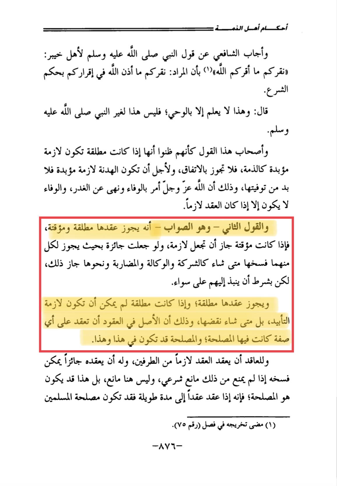
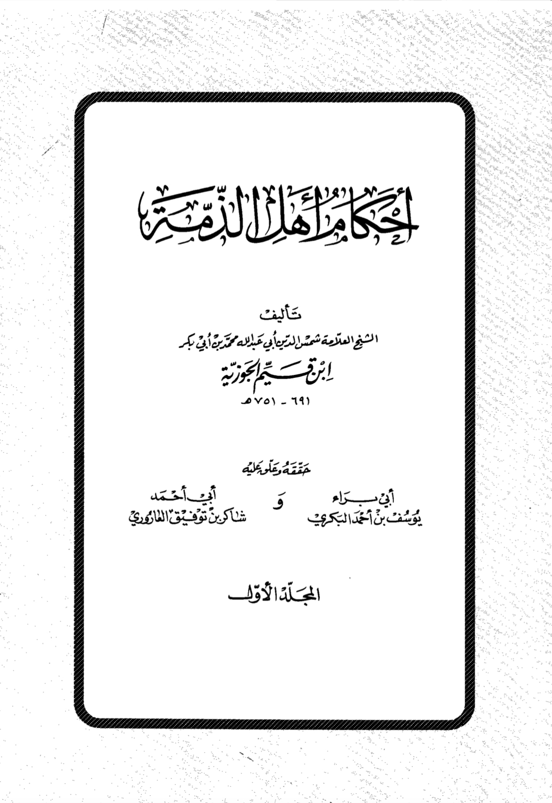
This is also the madhab of malik
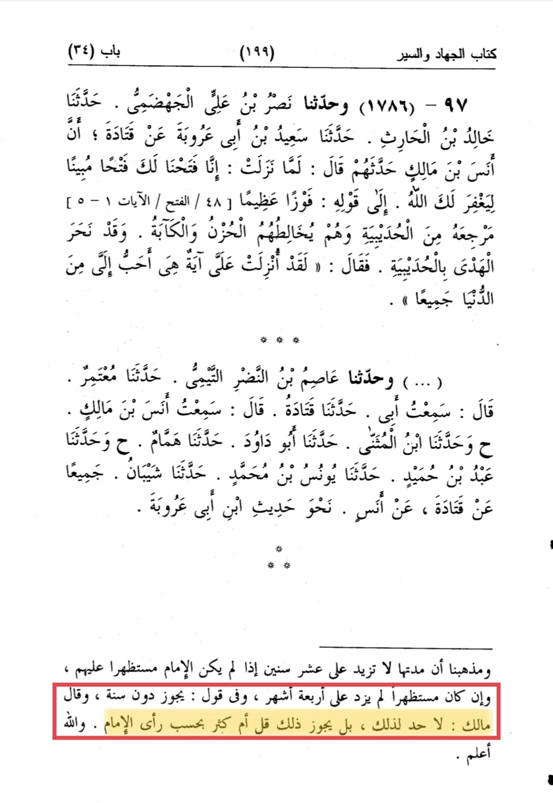
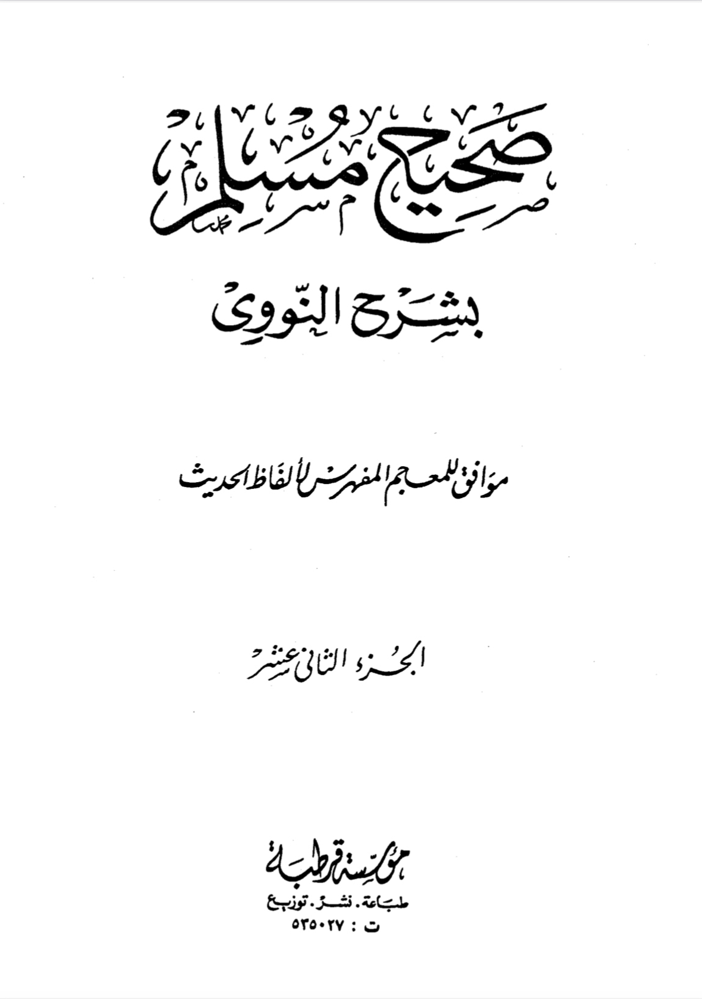
If a treaty ends you can renew it
As for mu’ahada it can be untill forever or they break it as Abu hanifa said there is an advantage from it not killing the Muslims
https://discover-the-truth.com/2017/02/05/revisiting-the-hudaybiyyah-treaty/
Ibn taymiyah writes:
“And his seerah was that all of who alleged treaty and didn’t fight him from the disbelievers, he (PBUH) didn’t fight him and that is in the books of sirah hadith tafsir fiqh and maghazi and it is mutawatir (mass transmitted) in his sirah. So he never started to fight any of the disbelievers so if Allāh ordered him to fight every kaffir then he would have done the negation of this.”
[Qa’idah mukhtasarah fi qital al-kuffar pg.134]
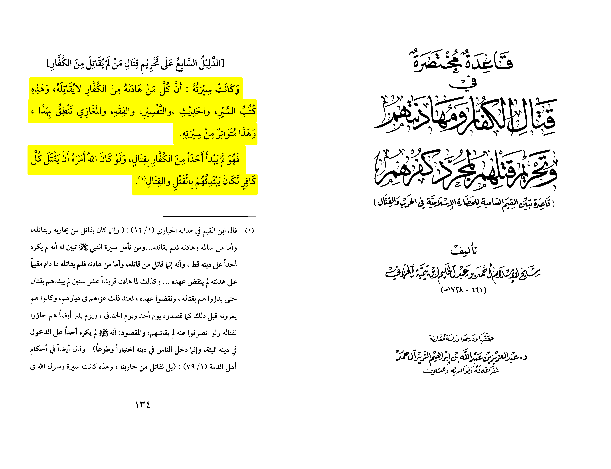
Ibn taymiyah also believed treaties could be in an undetermined time ibid pg.143, offensive jihad is towards hirabah also we mentioned the opinon of the hanafis and malikis if the country always Muslims to stay in peace then this is dar al-Islam that is impermissible to attack. We only attack only if there is danger or darar if there is nothing this would just spill blood of the Muslims that is impermissible
Critics would say no you can break a treaty whenever you like so first
Ibn ‘uthaymin
الحال الثانية: أن يستقيموا لنا، ولا نخاف منهم خيانة، ولم نرَ منهم خيانة، فحينئذٍ يجب علينا أن نستقيم لهم كما قال تعالى: ﴿فَما اسْتَقامُوا لَكُمْ فاسْتَقِيمُوا لَهُمْ إنَّ اللَّهَ يُحِبُّ المُتَّقِينَ﴾.
The second position: that they stay on their terms and we aren’t scared of a treason from them in that case we stay in terms with them
And that is when there is a maslaha (political advantage) but if there is no such as a country being peaceful allowing Islam inside of it then the objective is achieved and this would just result in shedding of blood that has no necessities and maybe the country not becoming safe for Muslims no more.
Ibn taymiyah notes:
“It is permissible to have a treaty with an undetermined time and with a determined time as for the undetermined time the imam should work with the political advantage”
[Al-Fatawah Al-Kubra (5/542)]
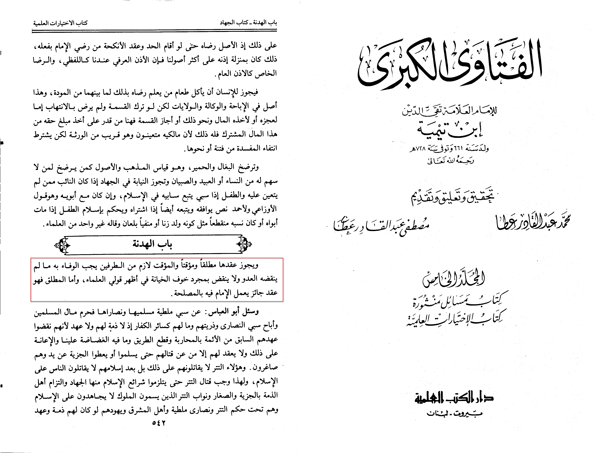
The ahnaf have permitted having a peace treaty with apostates if the apostates formed a country to attack Muslims (Al-Mawsu’a al-Fiqhiya al-Kuwaitiyah (42/223)
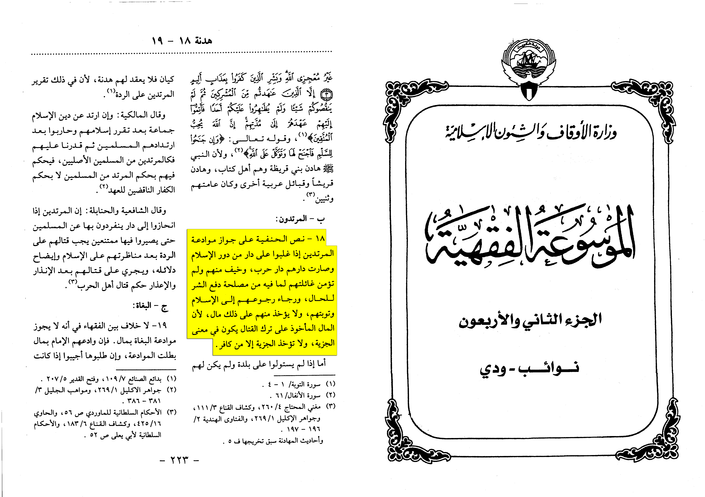
And it is permissible for the contracted country to not return those who came to them as apostates from either man or woman (al-mawsu’a al-fiqhiyah al-kuwaytiyah 42/216)
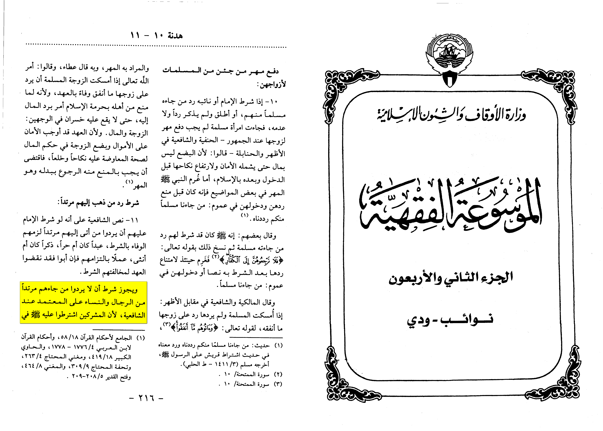
It is permissible according to the vast majority of scholars to return males who came muslim to our country (ibid pp.213)
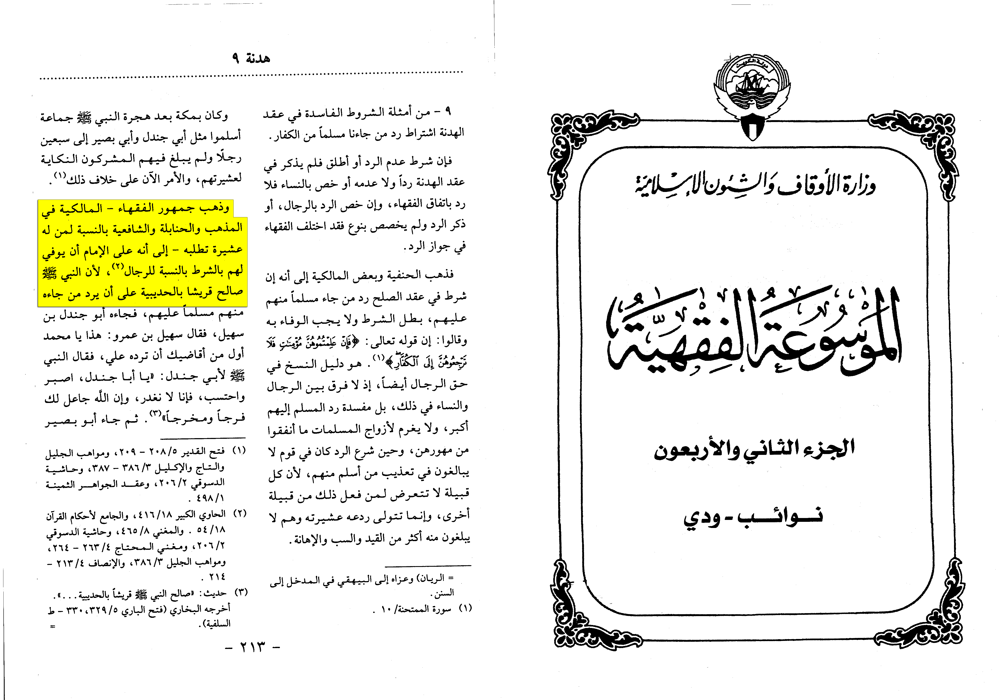
The ahnaf have said that treaty could be in an undetermined time except if there is no maslaha in it then no, because they can do it wether strong or weak in an undertmined time for example to stop evil easier way to spread Islam (ibid pp.213)
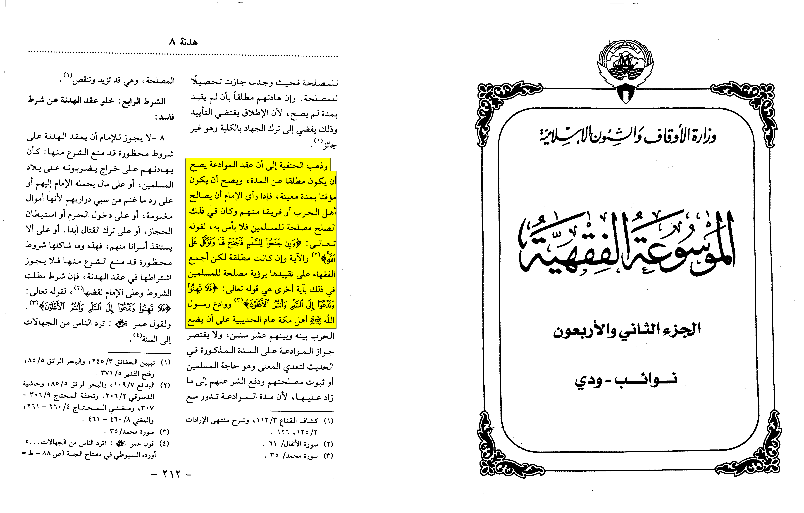
Qur'an such a treaty is allowed: وَإِن جَنَحُوا لِلسَّلْمِ فَاجْنَحْ لَهَا And if they tilt towards peace, towards it..." (8:61). This verse indicates that if the infidels want peace, it is permissible to enter into peace agreement with them. Therefore, some scholars think that the permission in this verse is conditional upon the assumption that the infidels take initiative for peace negotiations. The current verse prohibits the Muslims from taking initiative for peace. Thus there is no conflict between the two verses. However, the authentic ruling is that it is permissible for Muslims even to take initiative in negotiating peace with the infidels if it could be in the best interest of the Muslims - not by reason of cowardice and involvement in a life of luxury. The Qur’ an by the employment of the imperative sentence fala-tahinu [ do not lose heart ] in this verse indicates that the prohibition is meant for such an appeal for peace that is based on cowardice and escaping from Jihad. In this case too there is no conflict between the two verses, because the direction of tending to peace in verse 9:61 is restricted to a situation where it is based on the interest of the Muslims, and not on cowardice or leisure. Allah knows best.
Source: Maariful Quran 47:35
Another great scholar
As-Sakhawi says:
“And his (SWT) order with treaty (sulh) if they said nealed to it and they asked for it and in surah muhammed the prohibition is him starting the treaty offer
Also if there is no treaty they are in a state of war”
[Jamal al-Qūra’ 1/715]
 Scholars such as
Al-barbarti said:
“Because the objective has been accomplished which is to push off evil On the contrary of one who isn’t good then it isn’t permissible for the ruler to write a peace treaty with them for writing a peace treaty is leaving jihad as an image and meaning as for the image it is clear as they left fighting as for the meaning there haven’t been an advantage to the Muslims and there wasn’t a push off of the enemies evil
This was to explanation to the authors saying that there is no problem in writing a peace treaty in an undetermined time.”
From this we understand even if the Muslims are strong but there is an advantage in writing a peace treaty then there is no problem to write it in an undetermined time even if we were strong like the prophet did in hudaybiyah
[Al-‘Inayah Sharh Al-Hidayah (3/264-265)]
It is also permissible according bada’i al-sana’i for the ruler to contract them that if war happened he kills them not but enslaved them
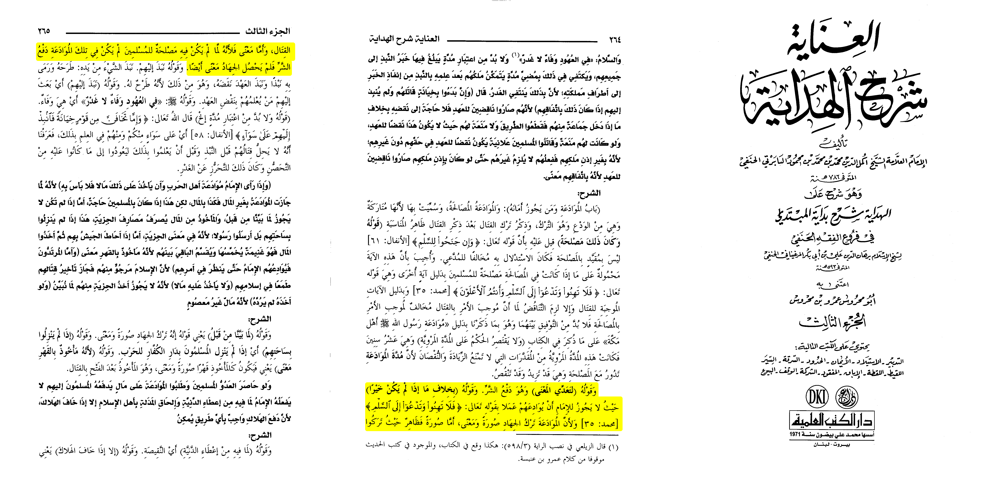
Sulaym ibn Amir reported: There was a peace treaty between Mu’awiyah and the Byzantine Romans. He was marching towards their country and when the covenant came to an end, he would attack them. A man came on a horse, saying, “Allah is Most Great! Allah is Most Great! Let there be faithfulness and not treachery!” When they looked, they found that he was ‘Amr ibn ‘Abasah. Mu’awiyah sent for him and questioned him about that. ‘Amr said: I heard the Messenger of Allah, peace and blessings be upon him, say, “If one has a covenant with people, he must not strengthen or loosen it until its term comes to an end, or he brings it to an end in agreement with them.” Thus, Mu’awiyah returned with the people.
Source: Sunan al-Tirmidhī 1580
Grade: Sahih (authentic) according to Al-Albani
Scholars such as
Al-barbarti said:
“Because the objective has been accomplished which is to push off evil On the contrary of one who isn’t good then it isn’t permissible for the ruler to write a peace treaty with them for writing a peace treaty is leaving jihad as an image and meaning as for the image it is clear as they left fighting as for the meaning there haven’t been an advantage to the Muslims and there wasn’t a push off of the enemies evil
This was to explanation to the authors saying that there is no problem in writing a peace treaty in an undetermined time.”
From this we understand even if the Muslims are strong but there is an advantage in writing a peace treaty then there is no problem to write it in an undetermined time even if we were strong like the prophet did in hudaybiyah
[Al-‘Inayah Sharh Al-Hidayah (3/264-265)]
It is also permissible according bada’i al-sana’i for the ruler to contract them that if war happened he kills them not but enslaved them
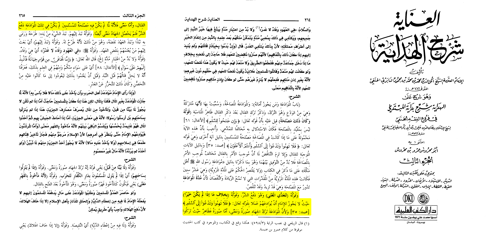
Sulaym ibn Amir reported: There was a peace treaty between Mu’awiyah and the Byzantine Romans. He was marching towards their country and when the covenant came to an end, he would attack them. A man came on a horse, saying, “Allah is Most Great! Allah is Most Great! Let there be faithfulness and not treachery!” When they looked, they found that he was ‘Amr ibn ‘Abasah. Mu’awiyah sent for him and questioned him about that. ‘Amr said: I heard the Messenger of Allah, peace and blessings be upon him, say, “If one has a covenant with people, he must not strengthen or loosen it until its term comes to an end, or he brings it to an end in agreement with them.” Thus, Mu’awiyah returned with the people.
Source: Sunan al-Tirmidhī 1580
Grade: Sahih (authentic) according to Al-Albani